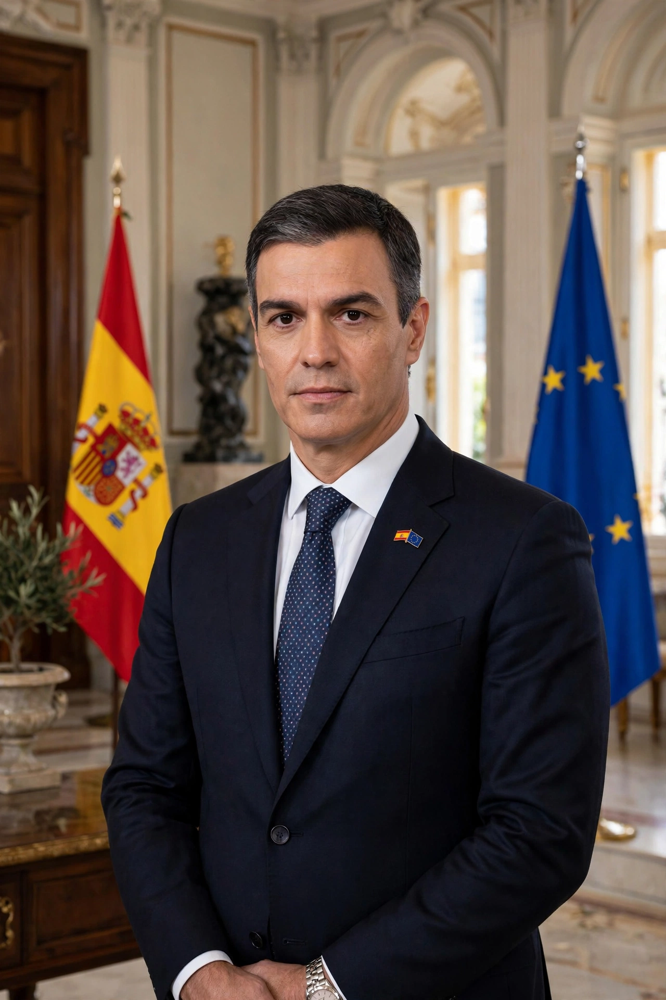

Pedro Sánchez Pérez-Castejón (born 29 February 1972) is a Spanish politician who has served as Prime Minister of Spain since 2018 and as secretary-general of the Spanish Socialist Workers' Party (PSOE) since 2017.

An economist, Sánchez worked for the UN in Bosnia and as an adviser in the European Parliament before becoming a Madrid city councillor and, in 2009, a deputy in Congress. He became PSOE leader in 2014, was ousted in an internal crisis in 2016, and won the leadership back in a membership primary in 2017.
Sánchez became prime minister in June 2018 after a successful no-confidence motion against Mariano Rajoy. He won elections in 2019, forming Spain's first coalition government since the 1930s with Unidas Podemos in January 2020. His governments managed the COVID-19 pandemic, passed labour and pension reforms, and — after the inconclusive July 2023 election — he secured a second investiture with support including Catalan parties in exchange for an amnesty law.